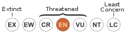

Lacerta aurelioi: Aurelio's rock lizard or Sargantana pallaresa
Aurelio's rock lizard (Iberolacerta aurelioi) is a species of lizard in the family Lacertidae. The species is endemic to the Iberian peninsula.
Conservation status
Endangered
Description
The specific name, aurelioi, is in honor of Aurelio Arribas, the father of the original describer of this species, Oscar J. Arribas. The natural habitats of I. aurelioi are temperate grassland, rocky areas, and pastureland, at altitudes of 2,100–2,940 m